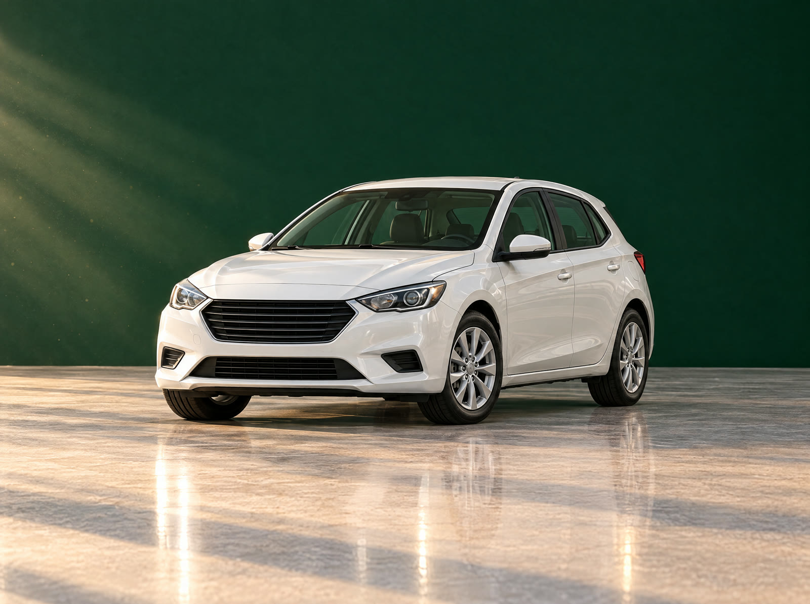
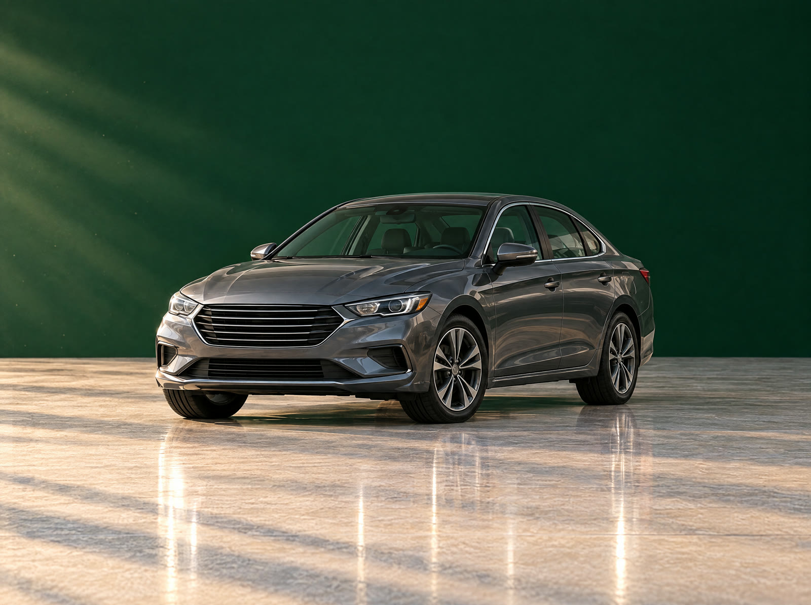
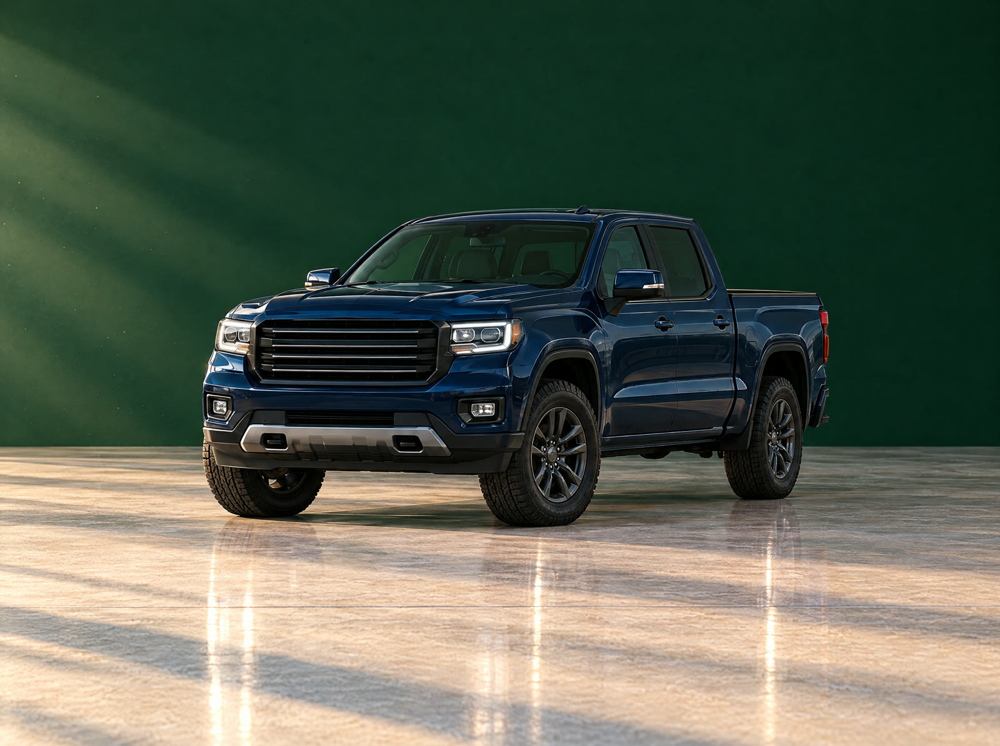
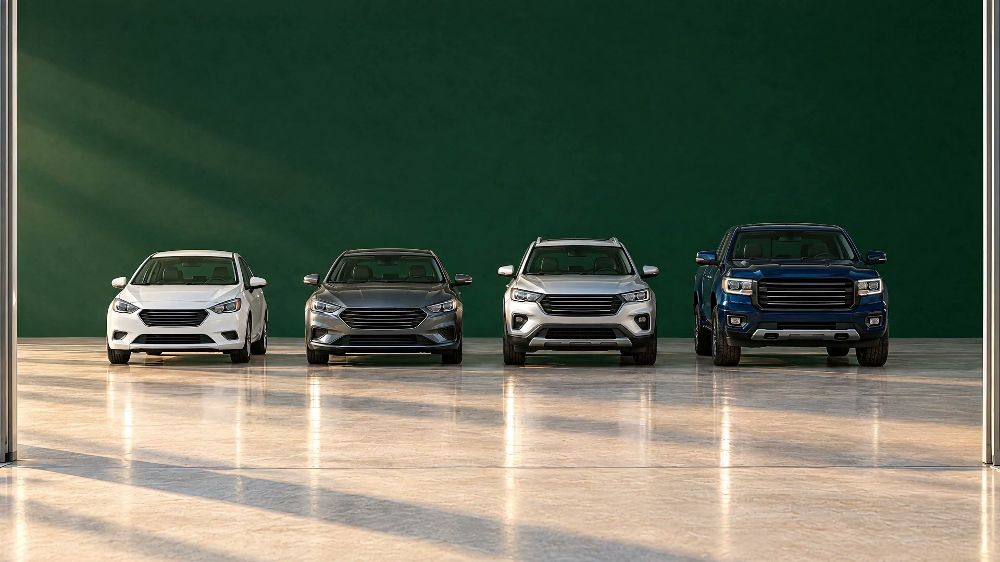

Às Claras · Multimarcas
Carro usado, sem nada escondido.
Uma loja multimarcas que abre tudo antes de você perguntar.
O passado do carro
Laudo na sua mão antes de falar de preço.
A conta
O preço do anúncio é o preço final.
Tudo às claras.
Do primeiro carro à picape. Todos com laudo, garantia por escrito e conta aberta.
Às Claras · Multimarcas
Carro usado,
sem nada escondido.
Multimarcas com laudo na mão, preço final no anúncio e avaliação justa do seu usado.
Agendar uma visitaÀs claras
Três coisas que outras lojas deixam fechadas.
Aqui elas ficam abertas, antes de você perguntar.
-
O passado do carro
Laudo cautelar de todo carro do pátio. Quilometragem conferida, sem leilão, sem sinistro. Na sua mão antes de falar de preço.
-
O preço
O valor do anúncio é o valor final. Transferência e taxas já aparecem na conta. Nada surge no dia da entrega.
-
A troca
Seu usado é avaliado na sua frente, com a tabela Fipe na tela. Você sai com o valor por escrito, comprando ou não.
Estoque
Do primeiro carro à picape.
Várias marcas, um padrão só. Todo carro entra no pátio com laudo aprovado.
-

Quero ver um hatchHatch
Para a cidade e para o primeiro carro.
-

Quero ver um sedãSedã
Para a família e para a estrada.
-
Quero ver um SUV
SUV
Para quem quer espaço e posição alta.
-

Quero ver uma picapePicape
Para o trabalho e para a terra.
O carro do anúncio é o carro que está no pátio. Vendeu, sai do site no mesmo dia.
O laudo
Segure o botão. O portão sobe.
Aperte e segure para ver o que existe por trás de um carro do nosso pátio.
Exemplo de ficha
SUV prata · 2021 · 48.200 km
- Quilometragem
- Conferida.
- Leilão
- Nunca passou.
- Sinistro
- Sem registro.
- Multas e débitos
- Zerados.
- Estrutura
- Original.
Como é a compra
Quatro passos. Nenhum no escuro.
-
Você escolhe
Veja o estoque no site ou no pátio. É o mesmo.
-
Você confere
Laudo na mão e test drive sem pressa. Quer trazer seu mecânico? Traga.
-
A conta aberta
Preço final, valor do seu usado e parcela na mesma tela. Você vê tudo antes de decidir.
-
Você leva
A gente cuida da transferência. O carro sai com garantia por escrito.
Quem comprou
O que muda quando a loja mostra tudo.
“Avaliaram meu carro na minha frente e explicaram cada desconto. Não era o valor que eu sonhava, mas era justo.”
“Levei meu mecânico. Ninguém fez cara feia.”
Depoimentos ilustrativos.
“Eu já tinha desistido de duas lojas. Aqui o vendedor me entregou o laudo antes de eu pedir. Fechei no mesmo dia.”
Dúvidas
Pergunte tudo. A resposta vem por escrito.
O carro já passou por leilão ou teve batida forte?
Não. A gente não compra carro de leilão nem com dano de estrutura. E você não precisa acreditar na gente: o laudo de cada carro fica na sua mão antes de falar de preço.
A quilometragem é real?
É conferida no laudo e no histórico de revisões. Carro que a gente não consegue comprovar não entra no pátio.
Posso levar meu mecânico?
Pode e deve. Traga quem você confia, ou leve o carro até a oficina dele.
Quanto vocês pagam no meu usado?
A avaliação é feita na sua frente, com a tabela Fipe na tela e o motivo de cada desconto. Você sai com o valor por escrito, comprando ou não.
O preço do anúncio é o preço final?
É. Transferência e taxas aparecem na conta antes de você assinar. Nada surge no dia da entrega.
E se der problema depois da compra?
Todo carro sai com garantia por escrito de motor e câmbio. Deu problema, você fala com a mesma pessoa que te vendeu.
Vocês financiam?
Sim, com vários bancos. Você vê a parcela, a taxa e o custo total lado a lado e escolhe com calma.
Visita
Venha ver de perto. O portão está aberto.
Escolha um horário, veja o carro com calma e leve o laudo para casa, comprando ou não.

- Segunda a sexta
- 8h às 18h
- Sábado
- 8h às 13h